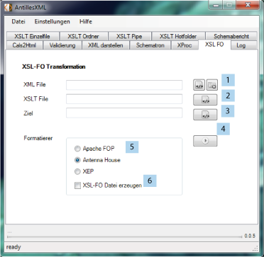

Hier hat der Benutzer die Möglichkeit XSL-FO Operationen durchzuführen. Diese optional ebenfalls ordnerweise.
Da es diverse XSL-FO Programme gibt, hat der Benutzer die Möglichkeit via eines Radiobuttons den gewünschten
Formatierer auszuwählen. Da einige von diesen Programmen nicht kostenlos zur Verfügung stehen, muss der Benutzer
den Pfad zu den entsprechend kommerziellen Produkten im Dateisystem angeben.

Zunächst muss die Eingabe Datei angegeben werden (1). Danach das Stylesheet(2) und das gewünschte Ziel(3). Weiterhin steht dem Benutzer offen den gewünschten Formatierer zu wählen (5). Optional kann noch aktiviert werden ob Zwischenstände erhalten bleiben sollen (6). Dann kann die Operation erfolgen (4).